1.Eris Cluster Creation¶
Prerequisites¶
- 1.1.Hardware:
- One AWS instance for root node
- Two AWS instances for validator nodes
- 1.2.Host OS:
- UBUNTU 14.04
- 1.3.Software:
- Docker version: 17.03.0-ce
- Docker Machine version: 0.10.0
Sequential Execution Steps¶
- 1.1.Install Docker
- Use the following command:-
- Check the installed docker version using the command:-
- 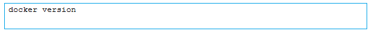
- 1.2.Install docker machine
- 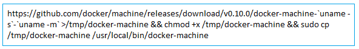
- Check the installed docker-machine version using the command:-
- 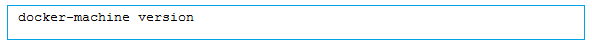
- 1.3.Install eris
- 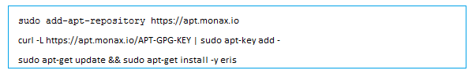
- 1.4.Initialize eris
- 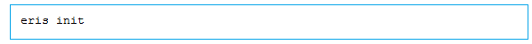
- 1.5.Start eris keys services
- 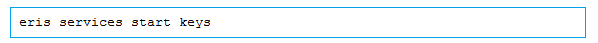
- 1.6.Create chain
- In the account-types folder, create specific account based toml files to provide specific permissions for various accounts that will be part of the chain.
- Eg.toml file to be placed in this folder is as follows:
- 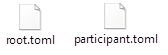
- In the chain-types folder, create the << chain name toml file>>. This file contains the chain specific configuration of accounts that are created via the toml files in the account-types folder.
- Eg.toml file to be placed in this folder is as follows:
- 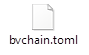
- To create the chain execute the following command
- 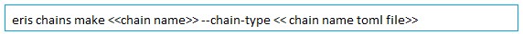
- 1.7.Add seeds in config.toml
- Update seed sections
<<ROOT_NODE_IP>> - Root server and port no. 46656
- <<VALIDATOR_NODE_n_IP>> - Validator server and port no. 46656
- 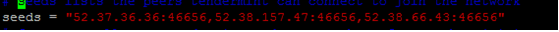
Update all the config.toml files under <<chain name>> subfolder.
- 1.8.Start chain
- 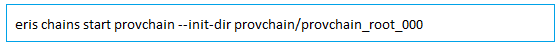
- 1.9.List all eris keys
- 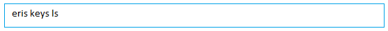
- 1.10.Export Eris Keys
- 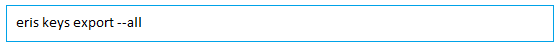
- 1.11.Check folder created under data
- 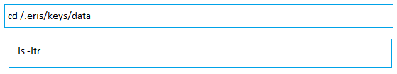
- 1.12.Create docker instances on validator nodes
- ** Note: ** Before running the above commands, make sure that the access is available to the remote machine. To provide access, the following commands can be used:
- eval ssh-agent -s ssh-add <</path/to/your/.pem/file>>
- 1.13.Creating chain in validator nodes
- 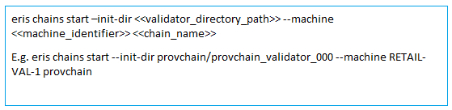
- 1.14.Check logs for error checking
- 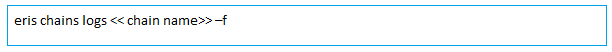
- 1.15.Check genesis_hash and latest_block_height in browser
- Open the URLs in the browser for all the nodes against port 46657
- E.g.: http://ec2-52-38-66-43.us-west-2.compute.amazonaws.com:46657/
- Go to status link and check genesis hash whether it is same for all nodes.
- 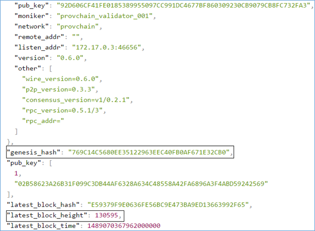
- Go to net_info link and check whether the other nodes are visible in the peers section.
- 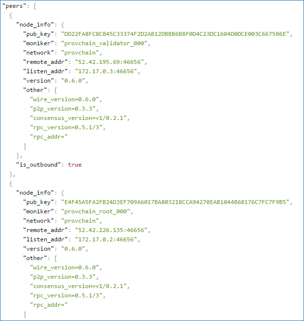
If both the above conditions are met, Eris clustering is successful. Congratulations!
- 1.16.In case of any error?
- Restart Eris keys service by the following commands:
- 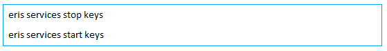
If the problem still persists, please follow the below steps:
- Unmount docker images from validator nodes
- Uninstall docker-engine from validator nodes
- Stop the chain & eris keys service
- Remove the chain directory
- Start from chain creation
{kind=link}
{kind=link}
{kind=link}
{kind=link}
{kind=link}
{kind=link}
{kind=link}
{kind=link}
{kind=link}
{kind=link}
{kind=link}
{kind=link}
{kind=link}
{kind=link}
{kind=link}
{kind=link}
{kind=link}
{kind=link}
{kind=link}
{kind=link}
{kind=link}
{kind=link}
2.Contract Deployment¶
Let’s now deploy a contract in Eris, after clustering has been implemented successfully.
Setup the following environment variables.
- Deploy the contract
- Use the following command.
- 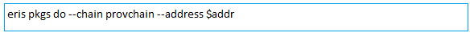
If the deployment is successful, jobs_output.json file and folder abi will be created in the same location.
{kind=link}
{kind=link}
{kind=link}
{kind=link}
{kind=link}
3.References¶
- Getting started with Eris
- https://monax.io/docs/tutorials/getting-started/
- Making an advanced Eris blockchain
- https://monax.io/docs/documentation/cm/latest/examples/chain-making/
- Getting familiar with Docker
- https://docs.docker.com/machine/get-started/#create-a-machine